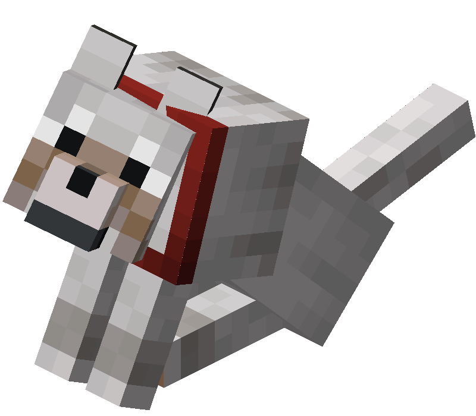
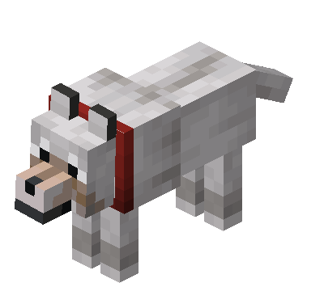

“ Jens花了大半个星期制作一种新的生物：狼！你可以驯服它并带在身边，它还可以当宠物。它们相当罕见，但驯服后它们不会消失。” ——Notch
狼（Wolf）是一种能够被玩家驯服的友好生物
未驯服的狼会在不同的生物群系中的草方块、砂土、灰化土、雪块或雪上生成不同的变种，具体如下表所示：
| 狼的变种 | 生物群系 | 每群数量 |
| 苍狼 | 针叶林 | 4 |
| 森林狼 | 森林 | 4 |
| 灰狼 | 积雪针叶林 | 4 |
| 黑狼 | 原始松木针叶林 | 2~4 |
| 栗色狼 | 原始云杉针叶林 | 2~4 |
| 赭红狼 | 稀疏丛林 | 2~4 |
| 斑点狼 | 热带高原 | 4~8 |
| 条纹狼 | 疏林恶地 | 4~8 |
| 雪狼 | 雪林 | 1 |
有10％的狼会生成为幼年个体。
狼被玩家或其他驯服的狼杀死时，会掉落1~3
 经验值。
经验值。
与其他幼年动物类似，杀死幼年狼不会掉落经验。
在基岩版中，杀死驯服的狼不会掉落经验。
狼有3种状态：
幼年狼的身体较小、头部较大，与其他动物的幼年形态相似。幼年狼的行为与成年狼相同。
幼年狼不会主动跟随成年狼，除非附近有狼攻击生物时跟随并参与其中。
玩家在距狼8格内的位置手持肉类或骨头时，狼会侧着头，像在乞求食物。
狼离开水或雨[仅JE]中后会甩动身体，甩出水花粒子。在Java版中，狼浸在水或雨中时纹理会加深。
|  |  |
| 一只驯服的狼正在乞求食物 | 一只驯服的狼正在甩干身上的水 |
狼以玩家行走的速度接近目标，并会像蜘蛛一样以跳跃攻击，但它在空中并没有伤害。
野生的狼会主动攻击骷髅、凋灵骷髅、流浪者、沼骸、凋灵[仅BE]、兔子、狐狸、绵羊、幼年海龟。驯服的狼站立时只会主动攻击骷髅、凋灵骷髅、流浪者、沼骸和凋灵[仅BE]。驯服的狼坐下时不会主动攻击，正在进行攻击的狼被要求坐下后会停止对目标的攻击。
骷髅、凋灵骷髅[仅JE]、流浪者、沼骸、狐狸、兔子和幼年海龟会主动避开狼。绵羊在未受到攻击时会忽视狼，但被狼攻击后仍然会四处逃窜。杀手兔[仅JE]不但不会逃离，还会主动攻击狼。羊驼会对野生的狼吐唾沫。遇到强度（Strength）为4或5的羊驼，狼总会逃离；对于强度更低的羊驼，狼则会时不时相应地逃离。
狼永远不会攻击苦力怕和恶魂。驯服的狼永远不会攻击自己的主人、与主人同队的生物[仅JE]、拥有相同主人的狼，以及驯服的猫、鹦鹉、马、驴、骡、骷髅马、僵尸马、羊驼、骆驼。
狼会对攻击它或攻击它主人的生物产生敌意，无论是否单次杀死主人，除非攻击者是狼不能攻击的目标。如果一只狼被攻击并对攻击者产生了敌意，附近（以被攻击的狼为中心的33×21×33区域）其他野生的狼和站着的驯服的狼也会对攻击者产生敌意。在和平难度，野生的狼被玩家攻击后仍会变为愤怒状态，但不会对玩家造成伤害。
在基岩版中，当野生的狼发现目标时，即使目标再次获得隐身效果，狼仍然会继续攻击目标并锁定其位置，无论狼是否受伤。
驯服的狼站立时，若其主人攻击了某一生物，狼会对该生物产生敌意，除非该生物是狼不能攻击的目标。
被驯服的狼杀死的生物，即使没有被玩家伤害过，也会掉落通常需要玩家参与击杀才会掉落的经验值和稀有掉落物。
驯服的狼装备狼铠时，受到大多数类型的伤害时不减少生命值，改为使狼铠减少与所受伤害值（向上取整）相等的耐久度。狼铠会根据剩余耐久度呈现不同程度的开裂纹理。
狼铠无法抵消下列类型的伤害（在Java版中它们带有伤害类型标签 #bypasses_wolf_armor）：
与驯服的狼交互且不进行喂食操作，或是成功驯服一只狼时[仅JE]，狼会坐下。再次与之交互时，它会站立。
坐着的狼被推入水中或受伤时会站起来。在Java版中，如果主人退出了多人游戏，其驯服的狼将一直坐着。
站立时，驯服的狼会以游荡的方式跟随玩家，在10格外时会直接走向玩家，在12格外时会传送到玩家附近。坐着时，它们不会跟随玩家。
驯服的狼会在12格外传送至其主人附近的方块上（若有）。
传送会重置狼的攻击行为，因此，如果狼在攻击生物时传送到玩家身边，它将继续跟随玩家。
驯服的狼有可能传送到一个无法进入的位置（例如冰面下）并因窒息而受伤或死亡。
狼不会传送的情况：
玩家可对野生的狼使用骨头以尝试驯服。成功驯服所需的骨头数量是随机的，每次使用骨头都有1⁄3的概率驯服狼，也就是说，驯服一只狼平均需要3个骨头。狼被驯服后，其纹理上会出现一个红色的项圈，并且不再接受骨头。玩家可以驯服的狼的数量没有限制。
玩家可对自己驯服的狼使用染料来改变其项圈的颜色。
玩家还可对自己驯服的成年狼使用狼铠，使其获得11（ × 5.5）护甲值；使用犰狳鳞甲可以修复其装备的狼铠；使用剪刀可以卸下其装备的狼铠。
驯服的狼的生命值不低于20（♥ × 10）时，空闲音效会出现哈气声；驯服的狼的生命值低于20（♥ × 10）时，空闲音效会出现哀鸣声。
与其他可驯服生物一样，驯服的狼死亡时会给其主人[仅JE]/世界中的所有玩家[仅BE]显示一条死亡消息。
驯服的狼的生命值可以通过喂食肉类来恢复。详见下表。任何肉类给狼恢复的生命值都为给玩家恢复饥饿值的两倍。
所有的食物都不会有任何恢复生命值以外的效果，如喂食腐肉和生鸡肉不会使狼受到饥饿效果。
在基岩版中，使用兔肉煲喂食狼时会回收一个碗。
| 食物 | 回复生命值 |
| 生鸡肉 | 4（♥♥） |
| 熟鸡肉 | 12（♥ × 6） |
|
生猪排
生牛肉 生兔肉 |
6（♥♥♥） |
|
熟猪排
牛排 |
16（♥ × 8） |
| 腐肉 | 8（♥♥♥♥） |
| 生羊肉 | 4（♥♥） |
| 熟羊肉 | 12（♥ × 6） |
| 熟兔肉 | 10（♥♥♥♥♥） |
|
河豚[仅BE]
热带鱼[仅BE] |
2（♥） |
|
生鳕鱼[仅BE]
生鲑鱼[仅BE] |
4（♥♥） |
| 熟鳕鱼[仅BE] | 10（♥♥♥♥♥） |
| 熟鲑鱼[仅BE] | 12（♥ × 6） |
| 兔肉煲[仅BE] | 20（♥ × 10） |